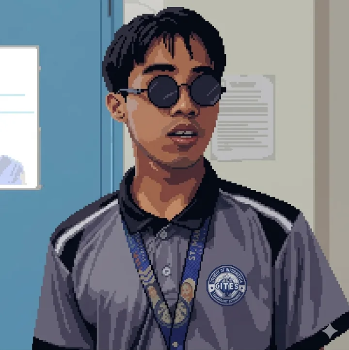
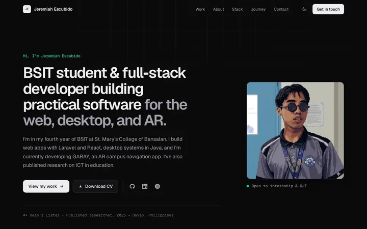

GradeHub
Student grade management system
An academic grading system with separate dashboards and workflows for each type of user, covering course management, student enrollment, and structured academic records.
- Registrar
- Faculty
- Student
Hi, I'm Jeremiah Escubido
I'm in my fourth year of BSIT at St. Mary's College of Bansalan. I build web apps with Laravel and React, desktop systems in Java, and I'm currently developing GABAY, an AR campus navigation app. I've also published research on ICT in education.

Selected work
What each project set out to do, what I built, and the tools I used.
Student grade management system
An academic grading system with separate dashboards and workflows for each type of user, covering course management, student enrollment, and structured academic records.
Point-of-sale system
A point-of-sale system with product and transaction management for day-to-day business operations, built on object-oriented design with its own custom API behind the desktop interface.
Augmented-reality campus navigation
A mobile app that helps people find their way around campus, with AR-based guidance and interactive location information.
“Correlation Between ICT Integration in Teaching, Learning and Perceived Student Performance Among College Students in Bansalan, Philippines”
Schools keep adding technology to the classroom, but how does it relate to how students see their own performance? This study examines the correlation between ICT integration in teaching and learning and the perceived academic performance of BSIT students in Bansalan.
A tile-based, isometric pixel-art world built and playtested in Godot: layered terrain and water, foliage, a controllable character, and collision areas tuned in the engine's debug view.

Hand-built with semantic HTML, modern CSS, and a small amount of vanilla JavaScript, with no framework or UI library. Responsive, keyboard accessible, light/dark aware, and light on mobile data.
A short-form action edit focused on pacing, transitions, and impact effects. The same eye for timing and detail carries into my interface work.
About
I'm Jeremiah Falcon Escubido, a fourth-year BSIT student at St. Mary's College of Bansalan in Davao. I build web applications, role-based management systems, and interactive tools, and I like understanding how the people who use them actually experience them.
Most of my recent work is full-stack: Laravel and React with TypeScript and Inertia.js, plus Java desktop apps. I've also worked with Arduino hardware, game development in Godot, and creative production such as graphic design, video editing, and short film direction. In 2025 I co-authored a published study on ICT integration in education.
Stack
Grouped by what I use them for, from coursework and my own projects.
Journey
2024 – 2026
St. Mary's College of Bansalan, Inc. · 4th year
Web applications, systems and security, system integration, AR development, computer graphics, and ICT research.
Jun 2025
Asian Journal of Education and Social Studies
Co-authored a study on ICT integration and perceived student performance among college students in Bansalan.
4×
BSIT program
Recognized four times for academic performance.
2018 – 2023
STI College of Novaliches
Research, on-the-job training, systems, web development, security, and IT innovation.
Beyond the code
Program events, recognition, presentations, and a few moments in between.
Contact
I'm open to internships and OJT, freelance projects, and collaborations, or just a good conversation about tech and creativity. Email is the best way to reach me.